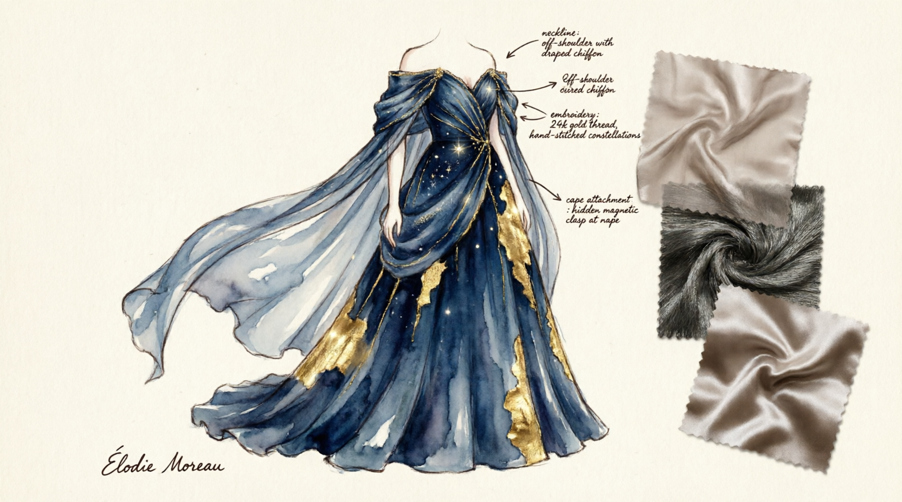
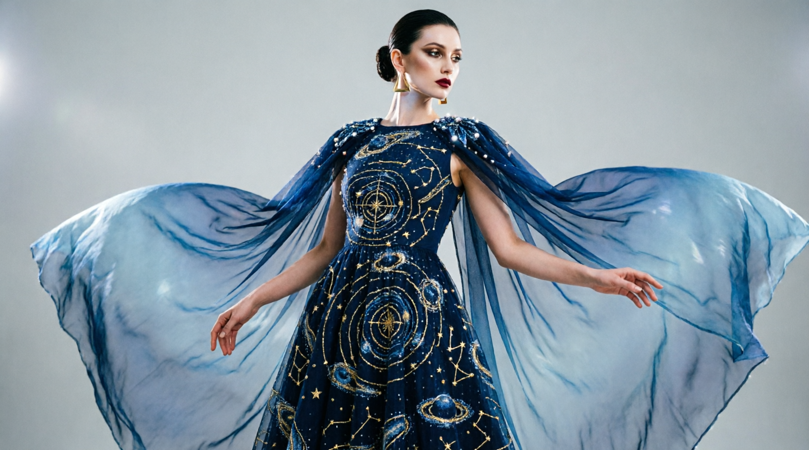
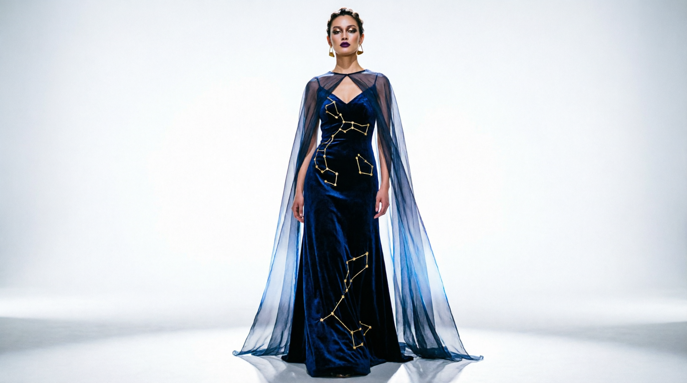
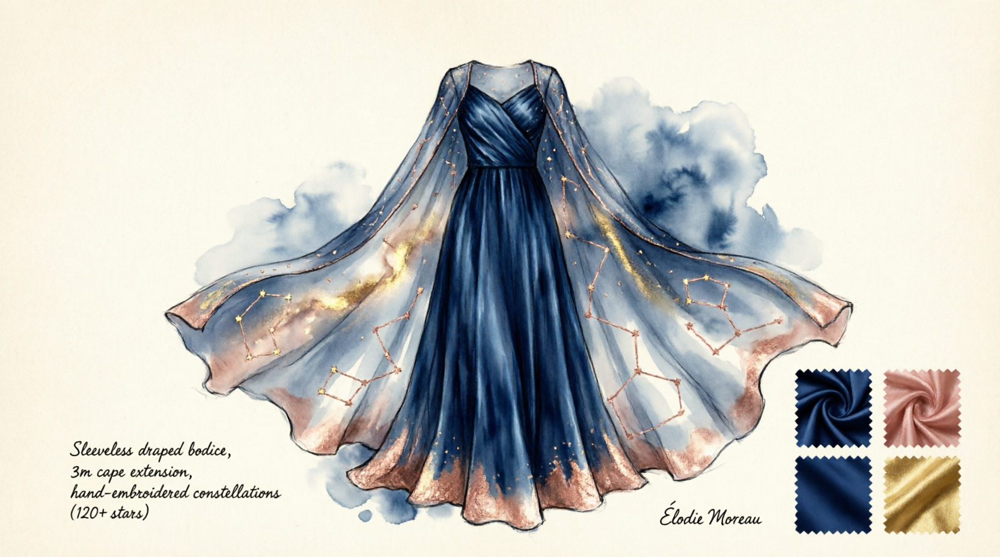
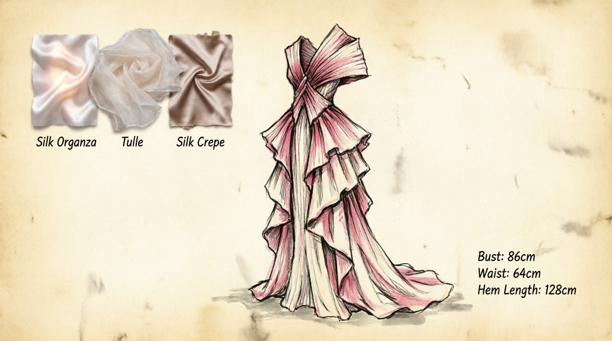
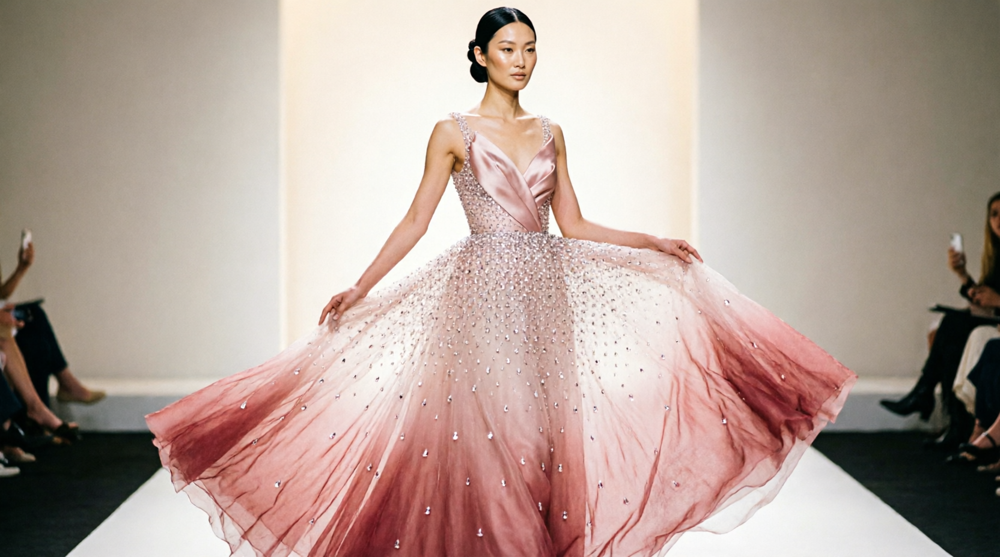

ADAPTATION
Archive.
"Curated selection of modern, fashion-forward womenswear to showcase our design language."
Sorona® Trench
Adaptive climate response silhouette. Organic drape with industrial-grade protection.

Geometric Synthesis

Phase: Drafting & Materiality
The initial design logic focuses on structural rigidity integrated with aerated yarn swatches. The overlap between 2D sketching and 3D textile architecture.

Phase: Collection Realization
Final runway adaptation. The garment translates the heavy-duty drafting lines into a wearable, high-performance silhouette with focused thermal zones.

Matrix Drape
Asymmetrical drape engineered to respond to movement. Organic fluidity meets structural precision.
Biomorphic Layering

Phase: Collection Realization
The final model silhouette demonstrates the multi-layered depth of the BioMatrix system. Every seam responds to the body's natural kinetics.

Phase: Drafting & Materiality
Exploration of non-linear seam patterns and translucent fiber swatches. The blueprint explores the tension between soft tissue and rigid textile.
Structural Finale
The architectural masterpiece of the archive. Culmination of fiber technology research.

Kinetic Weave Pulse

Phase: Drafting & Materiality
Focusing on high-density 3D knitting prototypes. The blueprint highlights the importance of respiratory fiber channels in active movement.

Phase: Collection Realization
The final knit profile. A seamless integration of technical performance and high-fashion elegance, showcasing the power of the KnitLogic weave.